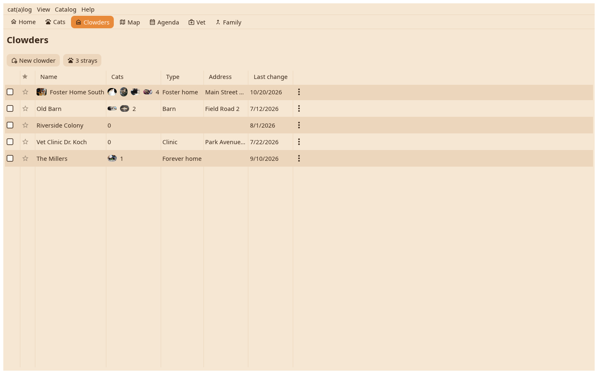

Every home in a table with its faces, its count and its status; a star marks a favourite. A click and Enter lays the home's card on the desk.

Name, the faces of the cats living there, how many, the status, the responsible person. Strays are a button above the table. New clowder asks for a name.
The card shows the cover picture, the fields with values, the cats with their faces; a click on a face lays that cat beside it, "Open all pets" lays every one and tiles them. The cover comes from a file or a drop onto the card.
Open, rename, the card, the timeline, hide, merge into, move to another catalog, delete; the same as the ⋮ on the row.